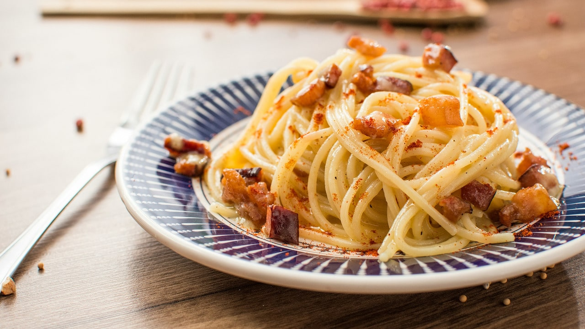

Spaghetti Carbonara

Photo by Raphael Nogueira on Unsplash
Description
This spaghetti carbonara is a rich "bacon and egg" pasta dish thats great to serve for any company you might have over.
Ingredients
- Spaghetti
- Olive oil
- Bacon
- Onion
- Garlic
- Dry white wine
- Eggs
- Cheese
- Salt
- Pepper
Directions
- Bring a pot of water to a boil. Cook spaghetti in boiling water per box directions or until al dente.
- Drain pasta, toss with olive oil, and then set aside.
- Cook bacon in a skillet over medium heat until browned, about 10 minutes.
- Remove bacon from the pan and drain on paper towels, reserve bacon fat in skillet.
- Add onion to the skillet and cook over medium heat until translucent.
- Add garlic and cook until fragrant, about 1 minute
- Add white wine and cook for another minute.
- Return cooked bacon to the skillet and add cooked pasta.
- Toss to coat noodles, add beaten eggs and continue tossing until eggs are just set.
- Add cheese, salt, and pepper; toss one final time.
- Serve warm; plate and enjoy.
Home